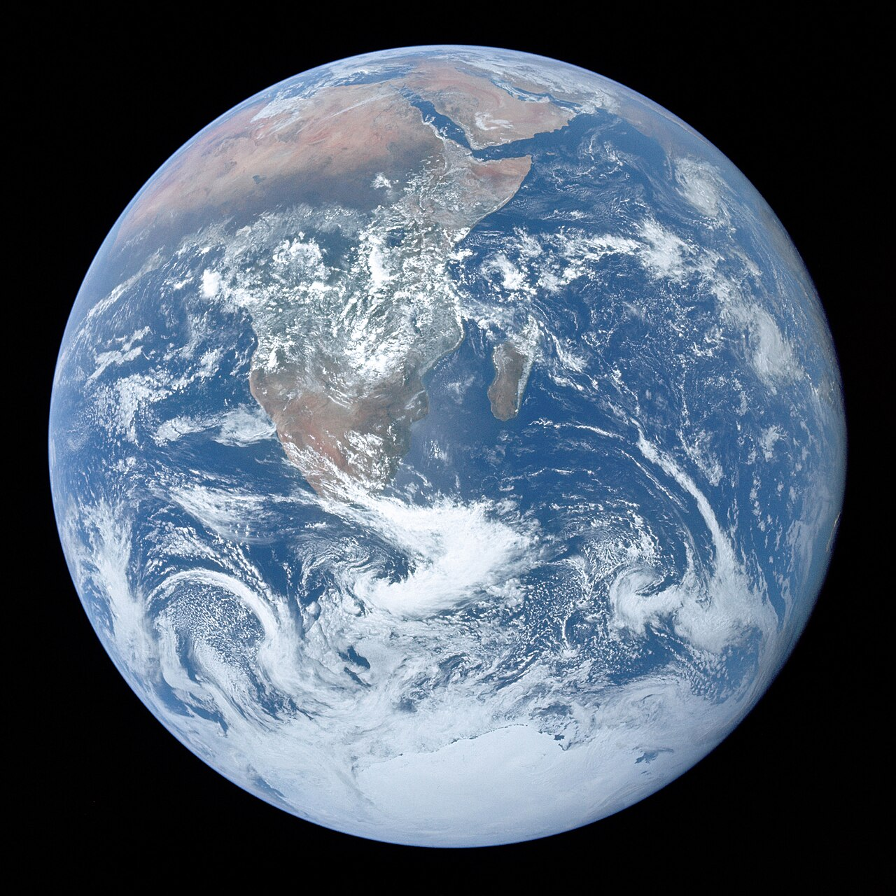
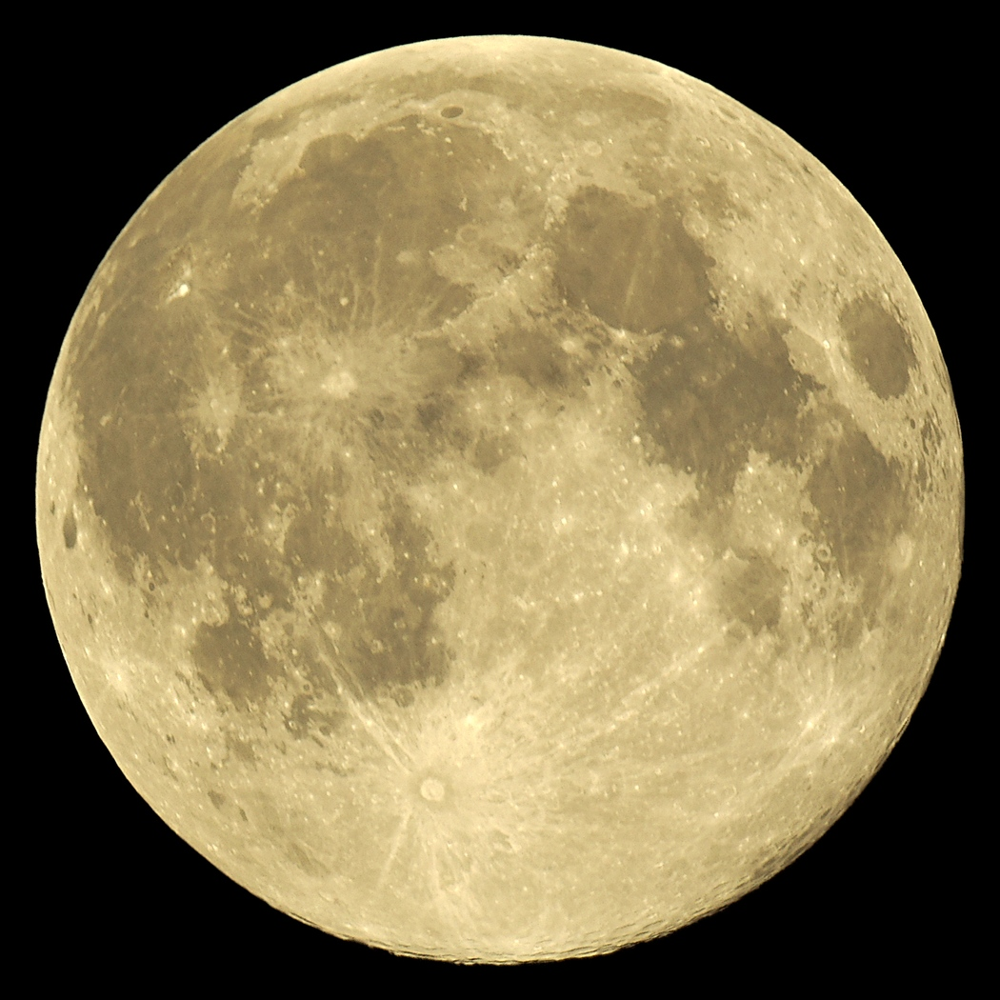

Земля і Місяць

Земля — третя планета від Сонця та єдина відома планета, на якій існує життя. Вона має форму геоїда, тобто є майже кулею, трохи сплюснутою біля полюсів і розширеною біля екватора. На Землі є вода, атмосфера та сприятливі умови для існування живих організмів. Наша планета обертається навколо своєї осі приблизно за 24 години, завдяки чому відбувається зміна дня і ночі, а повний оберт навколо Сонця здійснює за один рік.

Місяць — єдиний природний супутник Землі та найближче до нас небесне тіло. Він не має власного світла, а лише відбиває сонячні промені. Місяць обертається навколо Землі приблизно за 27,3 доби, а через особливості його руху ми бачимо майже завжди одну й ту саму сторону. Його гравітація впливає на припливи та відпливи в океанах. Під час руху навколо Землі змінюються фази Місяця: молодик, перша чверть, повня та остання чверть.
Земля і Місяць — це єдиний двійковий системи в Сонячній системі, де одна планета має супутника.